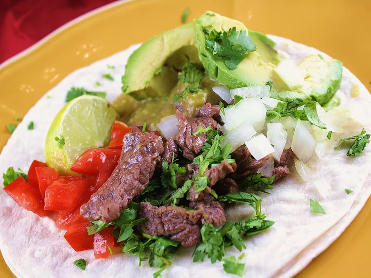

Tacos
Description
Everything you need to know to make beef tacos.
Ingredients
- 1 ½ pounds boneless beef top sirloin, cut into thin bite-size slices
- ½ teaspoon salt
- 1 teaspoon freshly ground black pepper
- crushed red pepper to taste
- 1 lime
- 1 (28 ounce) can tomatillos
- 2 fresh jalapeno peppers, seeded
- 4 tablespoons canola oil, divided
- 1 (10.5 ounce) can beef broth
- 12 (6 inch) corn tortillas
- ½ large onion, chopped
- 2 tomatoes, chopped
- 1 avocado - peeled, pitted and sliced
- 1 bunch fresh cilantro, chopped
- 1 lemon
Steps
- Place sliced meat into a shallow bowl, and season with salt, black pepper, and crushed red pepper. Squeeze the lime juice over the meat, and turn until evenly coated. Cover, and refrigerate for 30 minutes.
- In a blender or food processor, combine tomatillo and jalapeno. Puree for 15 to 20 seconds, or until thick. Heat 1 tablespoon oil in a large skillet over medium high heat. Carefully pour in tomatillo mixture. Cook, stirring frequently, for 5 minutes. Stir in beef broth. Reduce heat, and simmer for 20 to 30 minutes, or until mixture coats a spoon. Transfer mixture to a serving dish.
- Heat tablespoon oil in a large skillet over high heat. Stir in 1/3 of the beef, and saute for 1 minute. Transfer to serving dish. Repeat with remaining beef. Meanwhile, heat tortillas in the oven or microwave, according to package instructions.
- To serve, place two tortillas on top of each other. Add desired amount of meat, spoon over some tomatillo mixture. Top with onions, tomatoes, avocado and cilantro. Garnish with a wedge of lemon, to be squeezed over taco before eating.